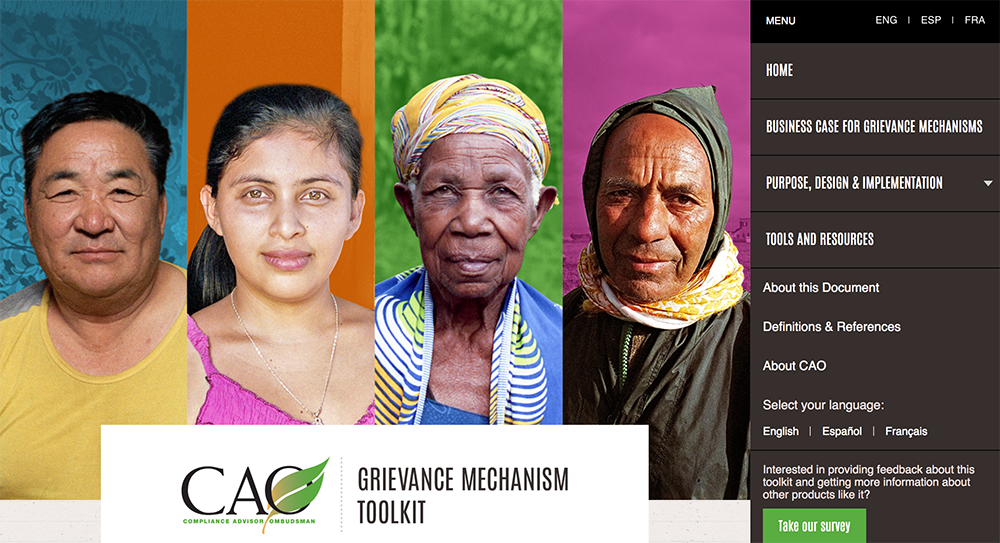

In its advisory role, CAO identifies broader environmental and social concerns that emerge from its caseload, and provides advice based on this analysis to the World Bank Group President and management of IFC and MIGA.
CAO’s advice is designed to promote institutional learning and change, and plays an important role in drawing on the perspectives of project-affected people to improve IFC and MIGA policies and practices.
CAO focused its advisory activities this year on lessons learned from agribusiness—a sector that has historically accounted for a large share of complaints to CAO.
CAO organized a joint workshop with IFC on lessons learned from the sector and drafted an advisory memo series on supply chains. CAO also rolled out its Grievance Mechanism Toolkit for small and medium enterprises. CAO continues to improve data gathering, analytics, and the evidence base that underpins advisory products, as well as monitoring and evaluation activities.
In the year ahead, IFC’s and MIGA’s strategic emphasis on fragile and conflict states will be an important focus for CAO’s advisory work. Investments in these contexts have unique environmental and social challenges. Learning lessons from past projects will be critical for IFC and MIGA to enhance their development impact.
Grievance Mechanism Toolkit
This fiscal year, CAO rolled out its Grievance Mechanism Toolkit, after launching it in 2016. The toolkit, which is a practical, online resource, is designed to help IFC and MIGA clients implement better project-level grievance mechanisms—a Performance Standard requirement. The toolkit draws from CAO case experience, external expertise, and inputs from IFC, MIGA, and World Bank staff on the challenges that exist in this area, particularly for smaller companies.
In June 2017, CAO conducted sessions on the toolkit at IFC’s Sustainability Exchange, a conference involving over 200 global executives and practitioners, including many IFC clients. CAO is planning further activities to raise awareness about the toolkit with stakeholders, including private sector companies and civil society organizations in other regions.
The toolkit’s target audience—small and medium enterprises in non-extractive sectors—have reported through surveys and interviews that the toolkit has been useful in establishing and improving their grievance mechanisms. Given the positive feedback, CAO has made the content available in French and Spanish. For more information, visit www.cao‑grm.org.